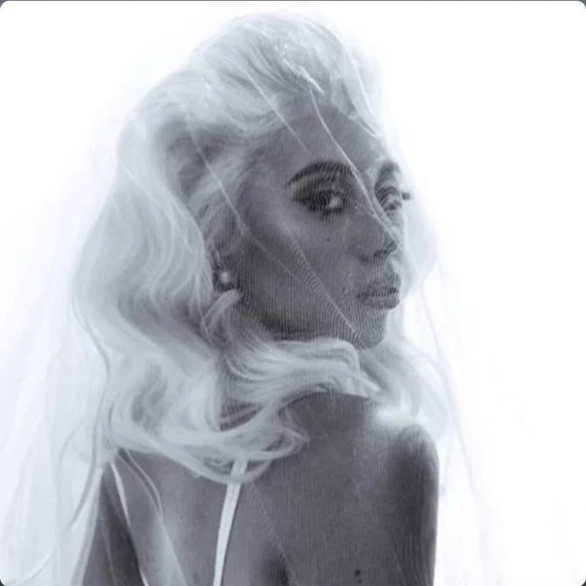
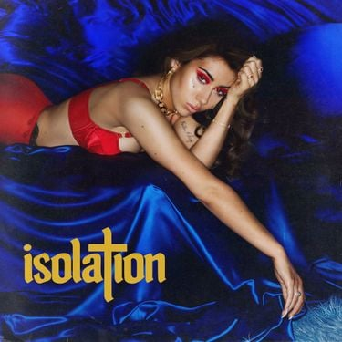
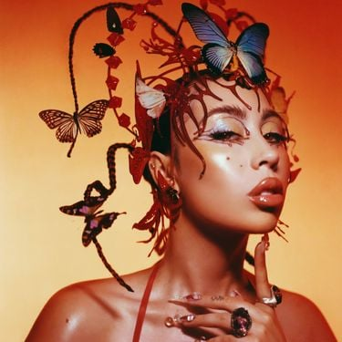
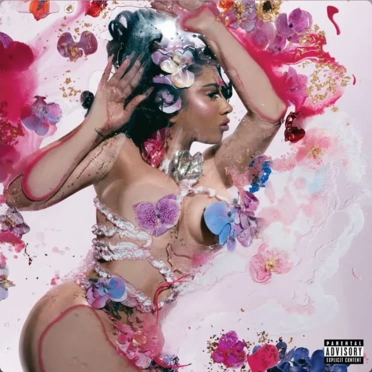
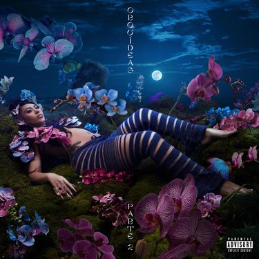
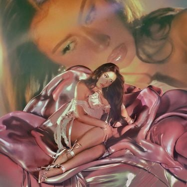
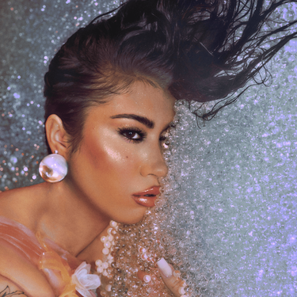

Por Vida (2015)

Clique na imagem para ouvir o álbum completo!
Isolation (2018)

Clique na imagem para ouvir o álbum completo!
Red Moon In Venus (2023)

Clique na imagem para ouvir o álbum completo!
Orquídeas (2024)

Clique na imagem para ouvir o álbum completo!
Orquídeas Parte 2(Deluxe) (2024)

Clique na imagem para ouvir o álbum completo!
Sincerely, (2025)

Clique na imagem para ouvir o álbum completo!
Sincerely: P.S. (2025)

Clique na imagem para ouvir o álbum completo!